4.1 Allgemeines
4.1.1 Bei der Auswahl von Schutzkleidung sind die Forderungen nach bestmöglichem Schutz einerseits und nach Tragekomfort andererseits abzuwägen. Die zu verwendende Schutzkleidung sollte daher je nach Anwendungsfall den in Abschnitt 4.3 beschriebenen Ausführungsbeispielen sowie den jeweiligen EN-Normen entsprechen.
Es ist insbesondere zu beachten, dass Schutzkleidung entsprechend der Art und Größe der Risiken und der betrieblichen Beanspruchung unter Beachtung der Herstellerinformationen (Gebrauchsanleitung), der Kennzeichnung der Ausrüstung (z.B. Schutzklassen, spezielle Einsatzbereiche), der ergonomischen Anforderungen und den gesundheitlichen Erfordernissen des Benutzers angepasst werden muss.
Da Schutzkleidung selbst nicht Ursache eines Unfalles werden darf, sollte sie so ausgeführt sein, dass sie möglichst eng am Körper anliegt und ein Hängenbleiben verhindert.
Hinsichtlich der Anbringung von Taschen ist auf die Festlegung der entsprechenden EN-Normen zu achten.
4.1.2 Vor der Anschaffung von Schutzkleidung sollte der Unternehmer entsprechend den in den Abschnitten 1 und 2 beschriebenen Einwirkungen und Risiken die im Anhang 1 beigefügte Checkliste ausfüllen und anhand dieser Checkliste Angebote verschiedener Hersteller und Modelle einholen.
4.2 Bewertung
Vor der Auswahl von Schutzkleidung hat der Unternehmer eine Bewertung der von ihm vorgesehenen Schutzkleidung vorzunehmen, um festzustellen, ob sie
Er hat dafür zu sorgen, dass je nach Erfordernis für jeden Versicherten eine eigene Schutzkleidung zur alleinigen Benutzung zur Verfügung steht.
4.3 Ausführungsbeispiele
4.3.1 Allgemeines
Es gibt Schutzkleidungsarten, die nur Körperbereiche und solche, die den gesamten Körper schützen. Dabei kann es sich z.B. um eine Schürze, einen Kittel, einen zweiteiligen oder einen einteiligen Anzug handeln. Einteilige Anzüge gibt es mit oder ohne Stiefel, Handschuhe und Kopfhaube. Stiefel und Handschuhe können fest eingearbeitet oder abnehmbar sein. Die Kopfhaube kann offen sein; eine geschlossene Haube erfordert das Benutzen eines geeigneten Atemschutzgerätes.
4.3.2 Schutzanzüge gegen das Erfasstwerden von sich bewegenden Teilen
Schutzanzüge gegen das Erfasstwerden von sich bewegenden Teilen sollen den Benutzer bei Arbeiten an oder in der Nähe von sich bewegenden Maschinenteilen und Geräten derart schützen, dass durch die sich bewegenden Teile keine Gefahr entsteht, erfasst oder mitgerissen zu werden. Wichtige Anforderungen sind, dass Ärmel und Beinabschlüsse durch Verstellbarkeit an den Körper enganliegend zu machen sein müssen. Darüber hinaus ist eine verdeckte Knopfleiste erforderlich. Es dürfen keine Außentaschen vorhanden sein.
In Betracht kommen Kombination (Overall), Bundjacke und Latzhose; siehe Abbildung 1.
Siehe auch DIN EN 510 "Festlegungen für Schutzkleidungen für Bereiche, in denen ein Risiko des Verfangens in beweglichen Teilen besteht".
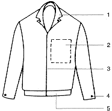
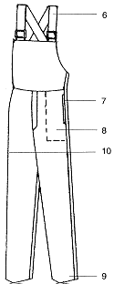
Bundjacke und Latzhose
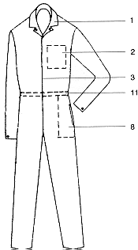
Kombination
1 = Umlegekragen
2 = Brusttaschen, innen/aufgesetzt
3 = Knopfleiste, verdeckt
4 = Ärmelende, einengbar/verschließbar
5 = Bundabschluss
6 = Hosenträger, verstellbar
7 = Teilverschließung durch Druckknöpfe
8 = Beutel-Innentasche, verschließbar
9 = Hosenbeinende, einengbar/verschließbar
10 = Maßstabtasche, aufgesetzt
11 = Tailleneinengung durch Bandzug
Abb.1: Beispiel von Schutzanzügen gegen das Risiko, von beweglichen Teilen erfasst zu werden
4.3.3 Schutzanzüge gegen Kontakt mit Flammen
Schutzanzüge gegen Kontakt mit Flammen bestehen aus einem Material, das bei einer kurzzeitigen Flammeneinwirkung nicht entflammt und das in Verbindung mit der Konstruktion der Anzüge eine Tragedauer von mindestens einer Arbeitsschicht ohne Unterbrechung erlaubt. Diese Eigenschaft des "Schwerentflammens" kann mit flammhemmend ausgerüsteten Textilien oder besser noch mit Textilien aus Spezial- oder besonderen Chemiefasern oder mit Sondermaterialien erreicht werden, die keiner Ausrüstung bedürfen. Liegt bei einem Schutzanzug gegen Kontakt mit Flammen keine Dauerausrüstung vor, muss eine Nachrüstung durch eine Fachwäscherei oder Fachreinigung vorgenommen werden.
Zur Ausführung kommen Jacke, Bundhose, Latzhose, Bundjacke und Kombination.
Siehe auch
- DIN EN 367 "Schutzkleidung; Schutz gegen Wärme und Flammen; Prüfverfahren: Bestimmung des Wärmedurchgangs bei Flammeneinwirkung",
- DIN EN ISO 15025 "Schutzkleidung; Schutz gegen Hitze und Flammen; Prüfverfahren für die begrenzte Flammenausbildung")
und- DIN EN 533 "Schutzkleidung; Schutz gegen Hitze und Flammen; Materialien und Materialkombinationen mit begrenzter Flammenausbreitung".
4.3.4 Schutzkleidung gegen Wärmestrahlung bei leichter Beanspruchung
Schutzanzüge gegen Wärmestrahlung bei leichter Beanspruchung sollen den Träger mindestens 8 s vor Strahlungswärme mit einer Wärmestromdichte von 20 kW/cm2 und der Einwirkung einer Flamme schützen, mit der er kurzzeitig in Berührung kommt. Diese Schutzanzüge sind vornehmlich zum Einsatz in Heißbetrieben vorgesehen. Das Material darf bei kurzzeitigem Kontakt mit Flammen nicht länger als 2 s weiterbrennen. Es ermöglicht eine Tragedauer von mindestens einer Arbeitsschicht ohne Unterbrechung.
Die Schutzanzüge werden über der Unterkleidung getragen. Zur Ausführung kommen Bundjacke, Latzhose, Bundhose, Jacke und Kombination.
Siehe auch
- DIN EN ISO 6942 "Schutzkleidung; Schutz gegen Hitze und Feuer; Prüfverfahren: Beurteilung von Materialien und Materialkombinationen, die einer Hitze-Strahlungsquelle ausgesetzt sind",
- DIN EN 367 "Schutzkleidung; Schutz gegen Wärme und Flammen; Prüfverfahren: Bestimmung des Wärmedurchgangs bei Flammeneinwirkung",
- DIN EN 531 "Schutzkleidung für hitzeexponierte Industriearbeiter (mit Ausnahme von Schutzkleidung für die Feuerwehr und für Schweißer)".
4.3.5 Schutzkleidung gegen Wärmestrahlung bei schwerer Beanspruchung
4.3.5.1 Schutzkleidung gegen Wärmestrahlung bei schwerer Beanspruchung soll den Träger mindestens 151 s vor einer Wärmestromdichte von 20 kW/cm2, der Einwirkung einer Flamme, mit der er kurzzeitig in Berührung kommt und - sofern zusätzlich gefordert - vor der kurzzeitigen Einwirkung feuerflüssiger Massen schützen. Sie kann zusätzlich über einem Wärmeschutzanzug leichter Beanspruchung und über eine Zeitspanne von mindestens 30 min getragen werden. Schutzkleidung wird vornehmlich in Bereichen eingesetzt, in denen noch atembare Umgebungsluft vorhanden ist, z.B. Schmelzöfen, Reparaturarbeiten bei Strahlungswärme, Brandbekämpfung.
4.3.5.2 Liegt eine intensive Flammeneinwirkung vor, muss im Einzelfall entschieden werden, ob diese Schutzkleidung ausreichend ist.
Zur Ausführung kommen Mäntel, Jacken, Hosen, Anzüge, Schürzen, Gamaschen, Ärmel, Kopfhauben und Überstiefel aus metallisierten Textilien.
Siehe auch
- DIN EN ISO 6942,
- DIN EN 367,
- DIN EN 531,
- DIN EN ISO 15025
und- DIN EN 533.
4.3.5.3 Asbestfasergewebe darf wegen des cancerogenen Asbeststaubes und der damit verbundenen Gefährdung nicht mehr verwendet werden.
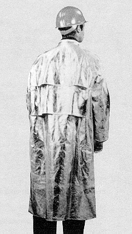
Abb. 2: Schutzmantel gegen Wärmestrahlung
4.3.6 Schutzanzüge gegen heißen Dampf
4.3.6.1 Schutzanzüge aus speziell gegerbtem Rindleder sollen den Träger vor Verbrühungen durch plötzlich auftretenden heißen Dampf schützen. Bei diesen Schutzanzügen darf auf der Innenseite im Zeitraum von 3 min keine höhere Temperatur als 45 °C auftreten.
4.3.6.2 Die Schutzanzüge müssen so gestaltet sein, dass sie schnell ausgezogen werden können. Damit diese Schutzkleidung stets geschlossen bleibt, wird sie nicht vorn, sondern an der Seite geschlossen.
Schutzanzüge gegen heißen Dampf bieten auch guten Schutz gegen Einwirkung von brennenden Lösemitteln und aggressiven Chemikalien.
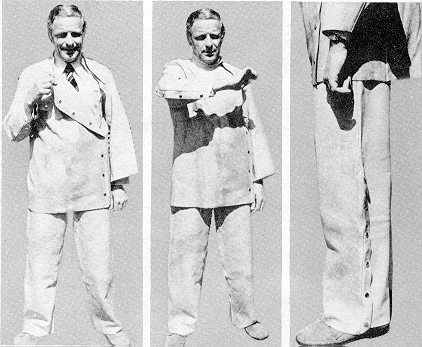
Abb. 3: Spezielle Schutzkleidung gegen heißen Dampf
4.3.7 Vollschutzanzüge
Für Bereiche, in denen mit intensiver Flammeneinwirkung zu rechnen ist, werden Sonderausführungen benötigt. Da in den meisten Fällen Atemschutzgeräte erforderlich sind, werden in diesen Schutzanzügen Rückteile eingearbeitet, die ein Tragen von Atemschutzgeräten ermöglichen. Eine Unterweisung der Benutzer im Gebrauch dieser Schutzanzüge ist unbedingt erforderlich.
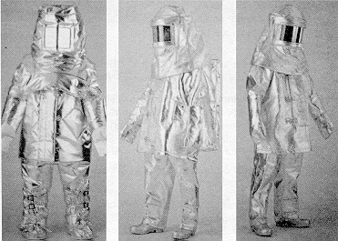
Abb. 4: Vollschutzkleidung für intensive Flammeneinwirkung
4.3.8 Schweißerschutzanzüge
4.3.8.1 Schweißerschutzanzüge sollen den Träger, z.B. beim Brennschneiden, Schweißen und verwandten Verfahren, gegen die Einwirkung von Metallspritzern, kurzzeitigen Kontakt mit Flammen und gegen Ultraviolett-Strahlung schützen.
Die Eigenschaften der Schweißerschutzanzüge gestatten das Tragen während einer ganzen Arbeitsschicht (in der Regel 8 Stunden).
Siehe auch DIN EN 470-1 "Schutzkleidung für Schweißen und verwandte Verfahren; Teil 1: Allgemeine Anforderungen".
4.3.8.2 Materialien zur Herstellung von Schweißerschutzanzügen sind vorrangig:
4.3.8.3 Durch Zwangshaltung beim Schweißen können im Schutzanzug Falten entstehen, in denen sich herabfallende Schweißperlen festsetzen. Um dies zu verhindern, haben sich in der Praxis Faltenabdeckung, Schutzärmel, Gamaschen, Schutzschürzen aus Leder oder anderem schwer entflammbaren Material bewährt.
Aus Sicherheitsgründen wird die Hose über den Stiefeln getragen.
4.3.8.4 Schweißerschutzanzüge für erhöhte Anforderungen können z.B. Schutzanzüge sein, die sich durch einen erhöhten Isolationswiderstand zum Schutz gegen Durchströmen oder durch ein höheres Flächengewicht zur Wärmeisolierung auszeichnen.
4.3.9 Chemikalienschutzanzüge
4.3.9.1 Allgemeines
Die Schutzwirkung der Chemikalienschutzanzüge muss auf die am Arbeitsplatz vorkommenden Chemikalien abgestimmt sein. Diese sind dem Hersteller bzw. Händler anzugeben. Erst wenn die Angaben über die vorkommenden Chemikalien dem Hersteller vorliegen, können die entsprechenden Chemikalienschutzanzüge ausgewählt und empfohlen werden.
Chemikalienschutzanzüge werden eingeteilt in:
Typ 1A - Vollschutzanzug mit innenliegender Atemluftversorgung
Typ 1B - Vollschutzanzug mit integrierter Vollmaske und Atemluftversorgung von außen
Typ 1C - Anzug mit Druckluftschlauchversorgung
Typ 2 - nicht gasdicht
Die Typen 1A, 1B und 1C sind als Chemikalienschutzanzüge für schwere Beanspruchung, Typ 2 für leichte Beanspruchung geeignet.
Hilfreich für die Auswahl von Chemikalienschutzanzügen ist eine Checkliste; siehe Anhang 1.
Zur Beurteilung der Schutzwirkung von Schutzanzügen sind europäisch genormte Prüfverfahren vorgeschrieben; siehe Anhang 5.
Siehe auch
- DIN EN 368 "Schutzkleidung; Schutz gegen flüssige Chemikalien; Prüfverfahren: Widerstand von Materialien gegen die Durchdringung von Flüssigkeiten",
- DIN EN ISO 6529 "Schutzkleidung; Schutz gegen Chemikalien; Bestimmung des Widerstands von Schutzkleidungsmaterialien gegen die Permeation von Flüssigkeiten und Gasen",
- DIN EN 464 "Schutzkleidung; Schutz gegen flüssige und gasförmige Chemikalien einschließlich Flüssigkeitsaerosole und feste Partikel; Prüfverfahren: Bestimmung der Leckdichtigkeit von gasdichten Anzügen (Innendruckprüfverfahren)",
- DIN EN 465 "Schutzkleidung; Schutz gegen flüssige Chemikalien; Leistungsanforderungen an Chemikalienschutzkleidung mit spraydichten Verbindungen zwischen den verschiedenen Teilen der Kleidung (Ausrüstung Typ 4)",
- DIN EN 466-1 "Schutzkleidung; Schutz gegen flüssige Chemikalien; Teil 1: Leistungsanforderungen an Chemikalienschutzkleidung mit flüssigkeitsdichten Verbindungen zwischen den verschiedenen Teilen der Kleidung (Ausrüstung Typ 3)",
- DIN EN 467 "Schutzkleidung; Schutz gegen flüssige Chemikalien; Leistungsanforderungen an Kleidungsstücke, die für Teile des Körpers einen Schutz gegen Chemikalien gewähren
und- DIN EN 468 "Schutzkleidung; Schutz gegen flüssige Chemikalien; Prüfverfahren; Beständigkeit gegen das Durchdringen von Spray (Spray-Test)".
4.3.9.2 Chemikalienschutzanzüge für leichte Beanspruchung
Chemikalienschutzanzüge für leichte Beanspruchung können ohne zusätzliche Maßnahmen, wie etwa Fremdbelüftung, während einer ganzen Arbeitsschicht getragen werden. Sie schützen den Träger bei gelegentlichem Kontakt mit sehr giftigen, giftigen, mindergiftigen (gesundheitsschädlichen), ätzenden oder reizenden Flüssigkeiten geringer Menge (Tropfen, Spritzer) jedoch nur für eine begrenzte Zeitspanne. Beim Umgang mit geringen Mengen weniger gefährlicher Stoffe können auch Schutzschürzen oder Kittel in Verbindung mit geeignetem Hand-, Fuß- und Gesichtsschutz verwendet werden.
Die verschiedenen Einsatzbereiche erfordern Chemikalienschutzanzüge aus einem gegen den Arbeitsstoff begrenzt undurchlässigen Material; deshalb sind besonders die Kennzeichnung, die Benutzerinformation und die Herstellerangaben zu beachten.
Beim Umgang mit Ölen und Fetten ist ein Material mit glatter und dichter Oberfläche und geringer Saugfähigkeit zu verwenden.
Wichtig für die Aufrechterhaltung des sicheren Zustandes der Schutzanzüge ist die Pflege und der ordnungsgemäße Zustand.
Eine eventuell notwendige Nachrüstung der Schutzanzüge ist sorgfältig durchzuführen, damit die Schutzeigenschaften wieder erreicht werden.
Siehe auch Abschnitt 7.
4.3.9.3 Chemikalienschutzanzüge für schwere Beanspruchung
Chemikalienschutzanzüge für schwere Beanspruchung schützen den Träger bei direktem Kontakt mit gesundheitsschädlichen Stoffen. Sie werden eingesetzt, wenn gefährliche Flüssigkeiten, Gase und Dämpfe durch die Haut aufgenommen werden können oder wenn Verätzungsgefahr besteht. Für eine begrenzte Zeitspanne können sie ohne zusätzliche Maßnahmen, z.B. Fremdbelüftung, wegen der bekleidungsphysiologisch ungünstigen Eigenschaften nur kurzzeitig getragen werden (30 min).
Ausgeführt werden Chemikalienschutzanzüge für schwere Beanspruchung in der Regel als Kombinationsanzug mit Kapuze, Schutzhandschuhen und Schutzstiefeln. Das Tragen von Atemschutz sowohl innerhalb als auch außerhalb des Anzuges muss möglich sein. Der Schutzanzug umhüllt den Körper bis auf das Gesicht.
Aus der Benutzerinformation muss ersichtlich sein, gegen welche Gefahrstoffe der Chemikalienschutzanzug geeignet ist.
Siehe auch
- DIN EN 943-1 "Schutzkleidung gegen flüssige und gasförmige Chemikalien, einschließlich Flüssigkeitsaerosole und feste Partikel; Teil 1: Leistungsanforderungen für belüftete und unbelüftete 'gasdichte' (Typ 1) und 'nicht gasdichte' (Typ 2) Chemikalienschutzanzüge"
und- DIN EN 943-2 "Schutzkleidung gegen flüssige und gasförmige Chemikalien, einschließlich Flüssigkeitsaerosole und feste Partikel; Teil 2: Leistungsanforderungen für gasdichte (Typ 1) Chemikalienschutzanzüge für Notfallteams (ET)".
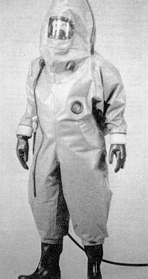
Abb. 5: Chemikalien-Vollschutzanzug mit geschlossener Haube (Atemluftversorgung von außen, Typ 1 B)
4.3.10 Schutzanzüge für das Ausbringen von Pflanzenbehandlungsmitteln
Während in der Regel beim Ausbringen von festen Pflanzenbehandlungsmitteln ein zweiteiliger Chemikalienschutzanzug (Typ 2 oder Einwegchemikalienschutzanzug) ausreicht, ist beim Ausbringen von Flüssigkeiten - insbesondere dann, wenn es sich um Gefahrstoffe handelt, die über die Haut aufgenommen werden - ein Chemikalienschutzanzug mit Kapuze zu benutzen. Das Material des Schutzanzuges gegen die entsprechende Chemikalie soll penetrations- und permeationsfest sein. Aus bekleidungsphysiologischen Gründen sind hier auch nur begrenzte Tragezeiten zugelassen.
Siehe DIN EN ISO 14877 "Schutzkleidung für Strahlarbeiten mit körnigen Strahlmitteln".
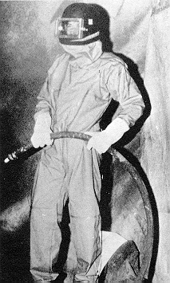
Abb. 6: Strahlerschutzanzug mit Atemschutz
Strahlerschutzanzüge dürfen keine Außentaschen haben und müssen sich leicht reinigen lassen, z.B. durch Luftdusche, Absaugen.
Strahlerschutzanzüge müssen ohne fremde Hilfe vom Benutzer leicht an- und ablegbar sein.
Die zugeführte Luft ist unter Beachtung der nachstehenden Punkte abzuleiten:
4.3.12 Schutzkleidung für Arbeiten an unter Spannung stehenden Teilen
Schutzkleidung bei Arbeiten an unter Spannung stehenden Teilen dient zum Schutz gegen elektrische Körperdurchströmung und teilweise auch gegen Einwirkung eines Störlichtbogens. Sie muss DIN VDE 0680 Teil 1 "Körperschutzmittel, Schutzvorrichtungen und Geräte zum Arbeiten an unter Spannung stehenden Teilen bis 1 000 V; Isolierende Körperschutzmittel und isolierende Schutzvorrichtungen" entsprechen. Für Schutzanzüge begrenzt sich jedoch der Anwendungsbereich auf Anlagen bis 500 V~ und 750 V=.
4.3.13 Antistatische Schutzanzüge
Die Aufladung von Personen in aufladbarer Kleidung kann im Allgemeinen durch das Tragen ableitfähiger Schuhe verhindert werden. Dennoch ist es nicht ausgeschlossen, dass sich die Kleidung elektrostatisch auflädt; deshalb darf der Oberflächenwiderstand 5 x 109 Ω bei homogenen Materialien nicht überschreiten. Das Ausziehen derartiger Kleidungsstücke kann jedoch zu zündauslösenden Entladungen führen und ist deshalb in explosionsgefährdeten Bereichen der Zonen 0, 1, 20 so-wie in Zone 21 bei Stoffen mit einer Mindestzündenergie < 3 mJ nicht zulässig.
Hinweis: Es wird besonders darauf hingewiesen, dass antistatische Schutzanzüge keinen Schutz gegen Brand- oder Explosionsauswirkungen bieten.
Siehe auch
- DIN EN 1149-1 "Schutzkleidung; Elektrostatische Eigenschaften; Teil 1: Oberflächenwiderstand (Prüfverfahren und Anforderungen)",
- DIN EN 1149-2 "Schutzkleidung; Elektrostatische Eigenschaften; Teil 2: Prüfverfahren für die Messung des elektrischen Widerstandes durch ein Material (Durchgangswiderstand)",
- DIN EN 1149-3 "Schutzkleidung; Elektrostatische Eigenschaften; Teil 3: Prüfverfahren für die Messung des Ladungsabbaus".
4.3.14 Kontaminationsschutzanzüge
(Kontamination mit radioaktivem Material)
Kontamination liegt vor, wenn eine Person oder ein Gegenstand mit radioaktivem Stoff verunreinigt ist. Der radioaktive Stoff haftet auf der Haut oder der Kleidung. Kontaminationsschutzanzüge bieten Schutz gegen Kontamination durch radioaktive Stäube, Flüssigkeiten oder Gase. Sie bieten jedoch keinen Schutz vor radioaktiver Strahlung.
Zur Ausführung kommen unbelüftete Schutzanzüge mit oder ohne Möglichkeit, Atemschutz zu tragen, unbelüftete Schutzanzüge mit belüfteter Sichthaube und fremdbelüftete Schutzanzüge. Die Auswahl der erforderlichen Schutzanzüge hängt von der Art der Einwirkung ab.
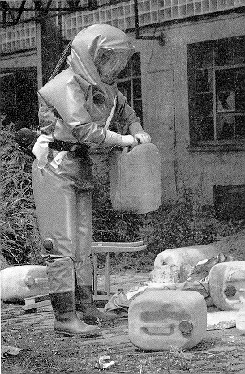
Abb. 7: Beispiel für einen Kontaminationsschutzanzug (unbelüftet, mit Atemschutz)
Siehe auch
- DIN EN 1073-1 "Schutzkleidung gegen radioaktive Kontamination; Teil 1: Anforderungen und Prüfverfahren für belüftete Schutzkleidung gegen radioaktive Kontamination durch feste Partikel",
- DIN EN 1073-2 "Schutzkleidung gegen radioaktive Kontamination; Teil 2: Anforderungen und Prüfverfahren für unbelüftete Schutzkleidung gegen radioaktive Kontamination durch feste Partikel".
4.3.15 Schutzanzüge für den begrenzten Mehrfacheinsatz (Einwegkleidung)
Diese Einwegkleidung kann über der Arbeits- oder Schutzkleidung getragen werden. Sie wird nach der Kontamination mit Schmutz oder Gefahrstoffen nicht gereinigt, sondern entsorgt. Man bezeichnet diese Schutzkleidung auch als Einwegkleidung. Zur Ausführung kommen hauptsächlich Kombinationen mit oder ohne Kapuze. Als Material werden zurzeit Vlies oder Folie verwendet. Es handelt sich um Fasern, die mechanisch verschlungen und anschließend im Spezialverfahren verfestigt werden. Dabei gibt es luftdurchlässige oder flüssigkeitsdichte Materialien. Der Anwender sollte genau angeben, gegen welche Einwirkungen die Schutzkleidung eingesetzt werden soll.
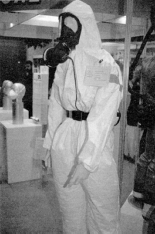
Abb. 8: Schutzanzüge für den begrenzten Mehrfacheinsatz
4.3.16 Schutzkleidung im medizinischen Bereich
Schutzkleidung im medizinischen Bereich hat die Aufgabe zu verhindern, dass die Kleidung (auch Berufs- oder Arbeitskleidung) der Versicherten mit Mikroorganismen kontaminiert wird und durch Verschleppen unkontrollierbare Gefahren entstehen. Sie ist geeignet, wenn sie
Im Allgemeinen ist aus Gründen der besseren Reinigung und Desinfektion der Hände und Unterarme kurzärmelige Schutzkleidung zweckmäßig. In besonderen Bereichen, z.B. auf Infektionsstationen, im Operationssaal und in mikrobiologischen Laboratorien kann zum Schutz vor Infektionen auch langärmelige Schutzkleidung mit Handschuhen, die zusammen vollständig die Haut bedecken, zweckmäßig sein.
*) künftig DIN EN 533 "Schutzkleidung; Schutz gegen Hitze und Flammen; Materialien und Materialkombinationen mit begrenzter Flammenausbreitung".
Es können auch Schürzen zum Einsatz kommen, sofern die vorstehend genannten Voraussetzungen erfüllt sind.
Die Schutzkleidung ist vor dem Betreten von Aufenthaltsräumen, insbesondere von Speiseräumen, abzulegen. Getragene Schutzkleidung und Privat- bzw. Berufskleidung sind getrennt aufzubewahren. Für die Desinfektion, Reinigung und Instandhaltung der Schutzkleidung hat der Unternehmer zu sorgen; siehe Abschnitt 7.
Siehe auch DIN EN 533.
4.3.17 Wetterschutzkleidung
Diese Schutzkleidung soll den Träger gegen die Einwirkungen von Nässe, Wind und Umgebungskälte bis -5 °C schützen. Das Schutzziel ist die Gesundheit des Trägers. Die Kleidung muss so ausgeführt sein, dass sie den Thermoregulationsprozess des menschlichen Körpers unterstützt. Dazu gehört eine möglichst hohe Wasserdampfdurchlässigkeit bei gleichzeitiger Winddichtheit.
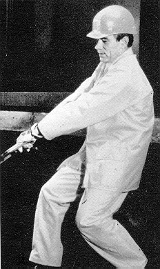
Abb. 9: Ausführungsbeispiel eines Wetterschutzanzuges
Für Wetterschutzkleidung werden in der Regel mehrschichtiges Laminat mit spezieller Membran bzw. mikroporös beschichtetes textiles Flächengebilde eingesetzt, die einen niedrigen Wasserdampfdurchgangswiderstand Ret besitzen, so dass sie den Wasserdampf vom Körper, z.B. Schweiß, passieren lassen, aber das Wasser von außen, z.B. Regen, abhalten.
Verbunden mit einer ventilierenden Schnittgestaltung vermitteln diese Konstruktionen bei mittelschwerer körperlicher Belastung des Trägers auch bei warmer Umgebung mit Temperaturen um 20 °C guten Tragekomfort.
Da unterschiedliche Materialien für Wetterschutzkleidung eingesetzt werden, wurde eine Klasseneinteilung vorgenommen. Maßstab ist hierbei der Wasserdampfdurchgangswiderstand
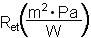
|
|
Wasserdampfdurch- gangswiderstand |
Materialbeispiele |
|
|
40 < Ret | PVC oder PVC beschichtet |
|
|
20 < Ret ≤ 40 | PUR, beschichtet |
|
|
Ret ≤ 20 | Laminat |
Tabelle 1:
Um bei unterschiedlich zum Einsatz kommenden Materialien keine Gesundheitsgefährdung durch metabolischen Kreislaufstress zu bewirken, wird eine Empfehlung für eine Tragezeitbegrenzung gegeben.
| Umgebungstemperatur |
|
|
|
|
|
|
|
|
|
|
|
|
|
|
|
|
|
|
|
|
|
|
|
|
|
|
|
|
| *) - keine Tragzeitbegrenzung | |||
Durch wirkungsvolle Ventilationsöffnungen oder Arbeitspausen kann die Tragezeit verlängert werden.
Tabelle 2: Tragezeiten in Minuten bei mittlerer Arbeitsschwere 150 W/relative Feuchte 50 %, Luftgeschwindigkeit V = 0,5 m/s
Siehe auch DIN EN 343 "Schutzkleidung gegen Regen".
4.3.18 Kälteschutzkleidung
Diese Kleidung dient zum Schutz gegen kaltes Wetter bei Temperaturen unterhalb von -5 °C. Der Anwendungsbereich dieser Kleidung liegt vornehmlich bei tiefen Umgebungstemperaturen. Ein entscheidender Faktor ist die Luftgeschwindigkeit. Die Kälteschutzkleidung wird auch in Kühlhäusern getragen, wobei die Isolationsanforderungen besser zu beherrschen sind, weil mit nennenswerter Luftgeschwindigkeit hier nicht zu rechnen ist.
Zur Beurteilung einer Kälteschutzkleidung sind folgende Eigenschaften der Kleidung zu ermitteln:
Um eine Kälteschutzkleidung optimal zu gestalten, ist für den Hersteller die Kenntnis der klimatischen Parameter des Einsatzortes, Lufttemperatur, mittlere Strahlungstemperatur, Luftgeschwindigkeit, relative Feuchte und Tätigkeit des Beschäftigten notwendig. Aus diesen Werten wird die erforderliche Isolation (IREQ) der Kleidung berechnet. In der unten zitierten europäischen Norm sind entsprechende Anforderungswerte enthalten. Neuere Entwicklungen machen auch den Einsatz beheizbarer Kälteschutzkleidung möglich.
Siehe auch DIN EN 342 "Schutzkleidung; Kleidungssysteme zum Schutz gegen Kälte".
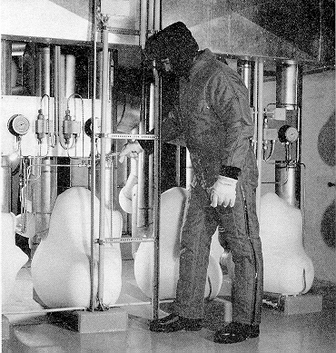
Abb. 10: Ausführungsbeispiel für Kälteschutzkleidung
4.3.19 Warnkleidung
4.3.19.1 Allgemeines
Warnkleidung ist eine Schutzausrüstung für Personen, die im Verkehrsraum tätig sind. Sie dient dazu, ihre Träger aus ausreichender Entfernung - auch bei Dunkelheit - frühzeitig erkennbar zu machen. Sie muss rundum mit Reflexstreifen ausgestattet sein. Da die Reflexstreifen nur bei Dunkelheit wirksam werden, ist für Tageslicht eine entsprechende Warnfarbe für die Warnkleidung vorgesehen. Nach DIN EN 471 "Warnkleidung; Prüfverfahren und Anforderungen" handelt es sich um fluoreszierendes Orange-Rot, fluoreszierendes Gelb oder fluoreszierendes Rot. Um den bisher erreichten Sicherheitsstandard in den genannten Gefährdungsbereichen zu erhalten, wird empfohlen, auch weiterhin Warnkleidung mit der Warnfarbe fluoreszierendes Orange-Rot einzusetzen.
Siehe auch BG-Information "Auswahl von Warnkleidung" (BGI 5037).
4.3.19.2 Ausführungen
Es gibt drei Klassen von Warnkleidung:
Klasse 3: Einteiliger Anzug, Jacke mit Ärmeln
Klasse 2: Weste, Überwurf, Latzhose
Klasse 1: Reflexgeschirr, Rundbundhose
Jede Klasse muss eine Mindestfläche von Hintergrund und Reflexmaterial aufweisen; siehe Tabelle 3.
| Materialart |
Klasse |
||
|
1 |
2 |
3 |
|
| Hintergrundmaterial |
0,8 |
0,53 |
0,14 |
| Retroreflektierendes Material |
0,2 |
0,13 |
0,10 |
| Material mit kombinierten Eigenschaften |
- |
- |
0,20 |
Tabelle 3: Mindestflächen des sichtbaren Materials in m2
Bezüglich der Breite der Reflexstreifen und des Ortes der Anbringung sind die Angaben der DIN EN 471 zu berücksichtigen.
Klasse 3 - Jacke
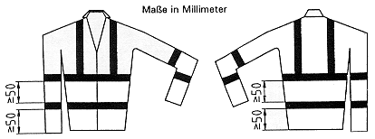
Klasse 2 - Weste
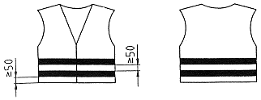
Klasse 1 - Rundbundhose
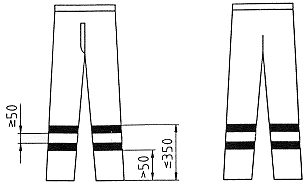
Je großflächiger das Hintergrundmaterial und je höher der Rückstrahlwert des Reflexmaterials einer Warnkleidung ist, desto besser kann sie wahrgenommen und damit erkannt werden. Aus größerer Entfernung ist eine großflächige Warnkleidung, d.h. mit großen Anteilen von Tagesleuchtfarben und Reflexmaterial, auch dann noch zu erkennen, wenn eine kleinflächige Ausführung nicht mehr sichtbar ist.
Anzüge - bestehend aus Latz- oder Rundbundhose und Jacke - bieten die höchste Auffälligkeit und sollten deshalb bevorzugt getragen werden. DIN EN 471 zeigt beispielhaft Gestaltungsmöglichkeiten von Reflexgeschirren auf. Diese Geschirre sind in die Normung mit aufgenommen worden, weil sie besonders in den südeuropäischen Ländern auf Grund der sehr hohen Sommertemperaturen getragen werden. Diese Konstruktionen besitzen jedoch einen unzureichenden Warnflächenanteil, sie dürfen darum nie als alleinige Warnkleidung benutzt werden.
4.3.20 Schutzkleidung für bestimmte Körperpartien
4.3.20.1 Schutzschürzen
Die Schutzwirkung von Schutzschürzen beschränkt sich hauptsächlich auf die Körpervorderseite. Sie bieten entsprechend der Auswahl der im Abschnitt 4.4 beschriebenen Materialien Schutz gegen folgende Einwirkungen:
Da die Befestigung der Schutzschürzen einen Einfluss auf die Trageeigenschaften hat, ist auf die Art der Beriemung besonderer Wert zu legen. Bei schweren Schürzen sind Kreuz- und Gabelriemen zweckmäßig, um den Druck auf den Schultern zu vermeiden. Um die Schürze im Gefahrfall schnell ablegen zu können, haben sich sogenannte "Ruck-Zuck"-Verschlüsse bewährt.
Zum Schutz gegen Spritzer von feuerflüssigen Materialien haben sich Schutzschürzen mit möglichst glatter Oberfläche aus Wollgewebe bewährt.
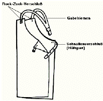
Abb. 13: Ruck-Zuck-Verschluss
4.3.21 Schutzmantel
4.3.21.1 Allgemeines
Schutzmäntel werden dort eingesetzt, wo vollständige Schutzanzüge nicht erforderlich sind oder wo sie als zusätzlichen Schutz benötigt werden. Sie dürfen keinen Rückengurt aufweisen.
4.3.21.2 Schutzmäntel für den Einsatz in Chemie-Laboratorien
Schutzmäntel schützen die von ihm bedeckten Körperbereiche des Trägers bei kurzzeitigem Kontakt mit sehr giftigen, giftigen, mindergiftigen, ätzenden oder reizenden Flüssigkeiten geringer Menge (Tropfen, Spritzer) für eine begrenzte Zeitspanne. Schutzmäntel werden über der Oberbekleidung getragen.
Eine weitere Anforderung an Schutzmäntel, den Schutz gegen kurzzeitigen Kontakt mit Flammen zu erfüllen, lässt sich mit den meisten Materialien, die Schutz gegen Chemikalien bieten, nicht erfüllen. Es wird daher empfohlen, in Laboratorien, in denen überwiegend die Gefahr des Kontaktes mit Flammen besteht, Schutzmäntel zu verwenden, die den Materialanforderungen gegen kurzzeitigen Kontakt mit Flammen entsprechen.
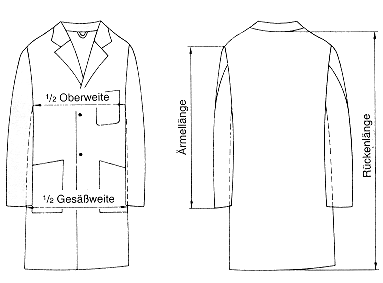
Abb. 14: Schutzmantel für den Einsatz in Chemie-Laboratorien
Siehe auch
- DIN EN 468,
- DIN EN 14605 "Schutzkleidung gegen flüssige Chemikalien; Leistungsanforde-rungen an Chemikalienschutzanzüge mit flüssigkeitsdichten (Typ 3) oder spray-dichten (Typ 4) Verbindungen zwischen den Teilen der Kleidung, einschließlich der Kleidungsstücke, die nur einen Schutz für Teile des Körpers gewähren (Ty-pen PB [3] und PB [4])"
und- DIN EN ISO 13982-1 "Schutzkleidung gegen feste Partikeln; Teil 1: Leistungs-anforderungen an Chemikalienschutzkleidung, die für den gesamten Körper ei-nen Schutz gegen luftgetragene feste Partikeln gewährt (Kleidung Typ 5)".
4.3.21.3 Röntgenschutzmäntel
Zum Einsatz gelangen Röntgenschutzmäntel aus gummiummanteltem Blei, die Vorderseite und Schulterblätter bedecken und die Einwirkungen der Röntgenstrahlung reduzieren.
Siehe auch Röntgenverordnung.
4.3.22 Unterkleidung
Unterkleidung hat einen wesentlichen Einfluss auf die Schutzwirkung und die Trageeigenschaften von Schutzanzügen. An einigen Arbeitsplätzen, z.B. in chemie-, flammen- und explosionsgefährdeten Bereichen, ist es unerlässlich, zu dem geeigneten Schutzanzug auch entsprechende Unterkleidung zu tragen.
Besonders bedeutungsvoll ist die Unterkleidung bei der Verwendung von Kälteschutzkleidung (siehe Abschnitt 4.3.18). Hier ist die Unterkleidung Bestandteil dieser Schutzkleidung.
Aus Gründen des Tragekomforts sollte die Unterkleidung eine nicht zu körpernahe Schnittgestaltung haben.
Unterkleidung aus Wolle oder Angorawolle hat eine vorzügliche Wärmeisolationswirkung. Diese Unterkleidung wird besonders an zugigen Arbeitsplätzen und im Freien bzw. dort empfohlen, wo stark wechselnde Umgebungstemperaturen vorliegen. Neuentwicklung von absorbierender Unterkleidung kann die Tragezeit verlängern.
Siehe auch DIN EN 342.
4.3.23 Schutzkleidung für den Umgang mit Kettensägen
Der Schutz gegen Verletzungen beim Umgang mit Kettensägen kann durch verschiedene Materialien im Schnittschutz der Beine und der Arme erreicht werden, z.B.
Siehe auch:
- DIN EN 381-1 "Schutzkleidung für die Benutzer von handgeführten Kettensä-gen; Teil 1: Prüfstand zur Prüfung des Widerstandes gegen Kettensägen-Schnitte"
und- DIN EN 381-5 "Schutzkleidung für die Benutzer von handgeführten Kettensä-gen; Teil 5: Anforderungen an Beinschutz".
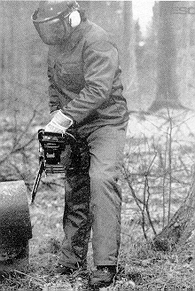
Abb. 15: Beispiel einer Schnittschutzhose nach DIN EN 381-5
4.4 Materialien zur Herstellung von Schutzkleidung
4.4.1 Faserstoffe
Zur Herstellung von Schutzkleidung kommen Natur-, Chemie- und Spezialfasern zur Anwendung. Tabelle 4 zeigt ein Diagramm von Faserstoffen.
4.4.2 Naturfasern
4.4.2.1 Baumwolle ist eine Naturfaser von 10 bis 50 mm Länge. Sie weist nach zunehmenden Wasch- bzw. Reinigungsprozessen einen Reißkraftverlust auf, dadurch wird die mechanische Beanspruchbarkeit reduziert. Darüber hinaus neigen Kleidungsstücke aus reiner Baumwolle beim Waschen zum Einlaufen. Baumwollgewebe brennt unter Verkohlung und kann durch Ausrüstung, z.B. mit Aflamman, Flammentin, Secan/Proban und Pyrovatex, gegen Flammen und Entflammen durch glühende Metall- und Schlackespritzer widerstandsfähiger gemacht werden. Zu beachten ist, dass die Schutzwirkung der Ausrüstung durch Waschen (Reinigen) verlorengehen kann und bei einer Reihe der Ausrüstungsmittel je nach Anzahl der Reinigungsbehandlungen nachgerüstet werden muss.
4.4.2.2 Wolle ist eine tierische Naturfaser, die 50 bis 300 mm lang ist. Textile Flächengebilde aus Wolle sind von Natur aus schwerer brennbar. Sie schützen gegen Flammen, Wärmestrahlung, Kontaktwärme sowie gegen glühende Metall- und Schlackespritzer. Wollstoffe, die mit Zirpo-Ausrüstung versehen sind, bieten verbesserten Schutz gegen Entflammen durch glühende Metall- und Schlackespritzer. Wolle eignet sich auch gut als Schutz gegen Kälte. Beim Waschen ist zu beachten, dass Wolle Waschtemperaturen über 40 °C nicht verträgt. Es ist daher die chemische Reinigung vorzuziehen.
4.4.3 Chemiefasern
"Chemiefaser" ist ein Gattungsname für alle auf chemischem Wege industriell hergestellten Spinn- und Filamentfasern. Man unterscheidet cellulosische Chemiefasern, z.B. Viskose, Cupro, Acetat und synthetische Chemiefasern, z.B. Polyamid, Polyester und andere.
Chemiefasern besitzen gegenüber Naturfasern im Allgemeinen höhere Festigkeits- und bessere Pflegeeigenschaften. Die Beständigkeit von Chemiefasern gegen erhöhte Temperatur kann durch spezielle Modifikation erheblich verbessert werden.
Chemiefasern, die besondere Anforderungen in Bezug auf Flammen und Hitzeschutz erfüllen, sind z.B.
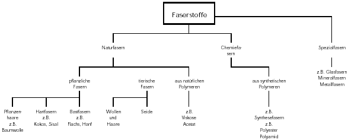
Tabelle 4: Diagramm von Faserstoffen
4.4.4 Antistatische Fasern sind synthetische Fasern, die hygroskopische Eigenschaften haben (Feuchtigkeit aus der Luft aufnehmen und dadurch leitfähiger werden). Die Beimischung von Metallfasern - die Wirksamkeit kann durch Bruch der Metallfaser herabgesetzt werden - zu anderen Textilfasern ermöglicht ebenfalls eine Ableitung elektrostatischer Aufladungen; störende und gefährliche Funken sind damit ausgeschlossen.
4.4.5 Spezialfasern
4.4.5.1 Asbest besteht aus faserig kristallisierten Silikatmineralien. Er brennt nicht, ist resistent gegen Säuren, Alkalien und andere Chemikalien. Asbest wurde in der Vergangenheit zum Schutze gegen Kontaktwärme sowie gegen glühende Metall- und Schlackenspritzer eingesetzt. Da Asbest zu den krebserzeugenden Stoffen gehört, ist die Verwendung von Asbest seit 1. Januar 1995 verboten.
4.4.5.2 Glasfasern sind Fasern aus natürlichen, anorganischen Stoffen. Sie sind verrottungsfest und unter Einhaltung bestimmter Vorsichtsmaßnahmen auch waschbar, leicht zu trocknen, besitzen jedoch im Allgemeinen nur eine beschränkte Scheuer- und Biegefestigkeit. Zur Verbesserung der Scheuer- und Knotenfestigkeit können Glasfasern mit einer Kunststoffhülle überzogen werden. Das Glasfasergewebe kann kunststoffbeschichtet oder metallisiert werden. Es bietet einen guten Schutz gegen glühende Metall- und Schlackenspritzer. Gegen Wärmestrahlung sind diese Fasern nur bedingt geeignet, da die Wärmeleitfähigkeit höher liegt als bei allen Chemie- und Naturfasern.
4.4.6 Sondermaterialien
4.4.6.1 Gummi wird durch eine chemische Reaktion (Vulkanisation) aus Kautschuk hergestellt. Gummi hat eine hohe Reißdehnung, ist beständig gegen viele Chemikalien. Er ist empfindlich gegen konzentrierte Schwefel-, Salpeter- und Chromsäure, aber widerstandsfähig gegen Alkalien. Chlor und andere Halogene greifen das Material an; Lösemittel führen zum Quellen. Gummi hat schlechte bekleidungsphysiologische Eigenschaften, Chemischreinigung soll vermieden werden.
4.4.6.2 Folien aus Kunststoff oder Folienverbunde, die aus der Verbindung zweier Materialien hergestellt sind. In der Praxis werden für Schutzkleidung hauptsächlich Kunststoff/Kunststoff- oder Kunststoff/Textil-Verbunde verwendet. Aus bekleidungsphysiologischen Gründen (schlechter Feuchtetransport) war der Einsatz von Folien für Schutzanzüge oder Schutzmäntel bisher begrenzt.
Neue Entwicklungen von mikroporösen oder wasserdampfdurchlässigen Folien ermöglichen es, dass Wasserdampf, nicht jedoch Wasser, durch die Folie hindurchgelassen wird. Diese besonderen Folien werden insbesondere für Wetterschutz- und Winterschutzkleidung eingesetzt.
4.4.6.3 Leder ist durch Gerbung konservierte Haut. Am häufigsten wird die Gerbung mit Chromsalzen durchgeführt. Gerbmittel und Gerbverfahren beeinflussen die Eigenschaften des Leders.
Leder unterscheidet sich grundsätzlich von allen Textilien. Die einzelnen Teilflächen der tierischen Haut sind nicht gleichwertig; sie haben unterschiedliche Eigenschaften. Am wertvollsten ist das sogenannte Kernstück der Haut (Croupon), das etwa 50 % der gesamten Hautfläche einnimmt. In diesem Teil ist das Fasergefüge am festesten und sehr gleichmäßig. Weniger Festigkeit weist Leder aus dem Hals- und Bauchteil auf. Wird die Haut horizontal geteilt (gespalten), bezeichnet man den oberen Teil, auf dem sich der Narben befindet, als Narbenspalt und den Spaltteil ohne Narbenschicht als den Fleischspalt. Während aus dem Narbenspalt das Volleder mit seinen guten Festigkeitswerten hergestellt wird, gewinnt man aus dem Fleischspalt später das eigentliche Spaltleder mit ebenfalls noch guten Festigkeitseigenschaften. In der Regel wird die Haut nur einmal gespalten. Sollte dennoch mehrfach gespalten werden, erhält man den Zwischenspalt, der für persönliche Schutzausrüstungen nicht verwendet werden sollte, da die Fasern beim Spalten zweimal durchschnitten wurden und damit die Festigkeitseigenschaften erheblich herabgesetzt werden. Der Einsatz von Narbenleder ist dort vorteilhaft, wo eine glatte Oberfläche und ein gutes Formhaltevermögen gewünscht werden. Leder - insbesondere Rindleder - bietet hervorragenden Schutz gegen kurzzeitig auftretende thermische Einwirkungen, speziell auch gegen heißen Dampf. Leder schützt ebenso gegen glühende Metallspritzer, gegen kurzzeitiges Einwirken aggressiver Stoffe, z.B. Säuren, Laugen und Lösemittel. Wegen seiner Wasseraufnahmefähigkeit und Wasserdampfdurchlässigkeit besitzt Leder gute bekleidungsphysiologische Eigenschaften.
4.4.6.4 Metall wird in textilen Flächengebilden in Form von Metallfäden verwendet. Außerdem kann Metall auf Faser-, Kunststoff- oder Lederoberflächen in Form von Beschichtung oder Metallbelägen aufgebracht werden, um die Wärmerückstrahlung zu erhöhen. Eine andere Verwendung von Metall für die Schutzkleidung erfolgt in einem so genannten Ringgeflecht- (miteinander verbundene Drahtringe aus Edelstahl) oder Schuppenplättchengewebe (Metallplättchen aus Aluminium oder Edelstahl, die mit endlos verschweißten Stahlringen verbunden sind).
Da Metall den höchsten Schutz gegen Stich- und Schnittverletzungen bietet, kommt diesem Material für stich- und schnittfeste Schutzkleidung besondere Bedeutung zu.
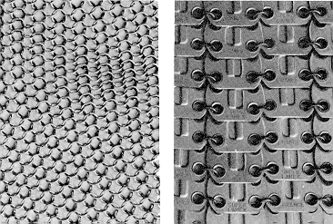
| Ringgeflecht | Schuppenplättchen |
4.5 Ergonomische Anforderungen
4.5.1 Gemäß der Achten Verordnung zum Geräte- und Produktsicherheitsgesetz (Verord-nung über das Inverkehrbringen von persönlichen Schutzausrüstungen - 8. GPSGV) ist die Schutzkleidung so zu gestalten, dass sie den Träger nicht behindert und nicht gefährdet.
Siehe auch Anhang 3.
4.5.2 Der Behinderung beim Tragen der Kleidung kann dadurch begegnet werden, dass die passende Größe ausgewählt wird und der Schrumpf beim Waschen und Trocknen nicht mehr als 3 % betragen darf.
Siehe auch DIN EN 340 "Schutzkleidung; Allgemeine Anforderungen".
4.6 Kennzeichnung
4.6.1 Allgemeines
Schutzkleidung muss mindestens mit folgenden Angaben deutlich erkennbar und dauerhaft gekennzeichnet sein:
Zusätzlich muss die CE-Kennzeichnung angebracht sein.
Das CE-Zeichen besteht aus dem Kurzzeichen "CE" (CE = Communauté européenne).
Für die Auswahl von Schutzkleidung ist die Herstellerinformation vom Lieferanten über Verwendung, Schutzfunktion und Haltbarkeit der Schutzkleidung zu benutzen. Hierzu zählt die Gewährleistung, dass die Anforderungen der EG-Richtlinie bzw. der zutreffenden harmonisierten EN-Normen durch den Lieferanten erfüllt werden. DDies erfolgt durch die CE-Kennzeichnung und die Konformitätserklärung.
Siehe auch Richtlinie 93/68/EWG.
4.6.2 Kennzeichnung jedes Schutzkleidungsteiles durch ein Piktogramm
4.6.2.1 Jedes Teil der Schutzkleidung muss gekennzeichnet sein. Die Kennzeichnung muss
4.6.2.2 Die Kennzeichnung muss folgende Informationen beinhalten:
Als Bezeichnung für die Gefahren der Anwendungsart findet das Piktogramm entsprechend den Hinweisen Verwendung, welche in der spezifischen Norm bei den Anforderungen an die Kennzeichnung gegeben werden.
Bei nichtklassifizierten Anforderungen finden sich neben dem Piktogramm keine Nummern. Hinsichtlich klassifizierter Anforderungen wird die Zahl, die den Leistungsgrad angibt, neben dem Piktogramm angeführt. Diese Zahlen befinden sich immer in der von der spezifischen Norm geforderten, festgelegten Reihenfolge. Sie werden neben dem Piktogramm dargestellt, wobei sie auf dessen rechter Seite beginnen und dem Uhrzeigersinn folgen.
Beispiel für Wetterschutzkleidung:
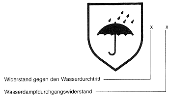
Die spezifische Norm beschreibt die Reihenfolge der klassifizierten Anforderungen. In diesem Beispiel zeigt die
- Position der Leistungsstufe der Widerstandsfähigkeit gegen Wasserdurchdringung,
- Position der Leistungsstufe des Materials für den Wasserdampfdurchgangswiderstand.
Hinter dem Piktogramm für Chemikalienschutzkleidung folgt ein "i", welches darauf hinweist, dass die Anweisungen des Herstellers zu berücksichtigen sind. Für den Fall, dass der Leistungsgrad für alle Kriterien unterhalb des Minimums liegt, wird das Piktogramm durchgestrichen. Mit der Verwendung eines durchgestrichenen Piktogramms kann der Hersteller erklären, dass das Produkt nicht gegen eine spezielle Gefahr bzw. einen speziellen Verwendungszweck vorgesehen ist.
Siehe auch DIN EN 340.
4.6.3 Textilkennzeichnung
Nach dem Textilkennzeichnungsgesetz dürfen in Deutschland Textilien - von wenigen Ausnahmen abgesehen - nur mit Angabe des Rohstoffgehaltes (Art- und Gewichtsanteil, z.B. 100 % Baumwolle) in den Verkehr gebracht werden. Bei textiler Schutzkleidung ist auf diese Angabe zu achten, weil hiervon unter anderem die Verwendungsmöglichkeit abhängt.
4.6.4 Pflegekennzeichnung
Bei der Pflegekennzeichnung handelt es sich um internationale Symbole für die Pflegebehandlung von Textilien, z.B. Waschen, Bügeln, Chemischreinigen.
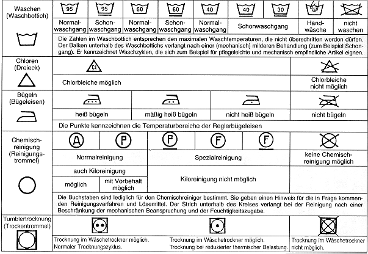
Abb. 17: Pflegekennzeichnung